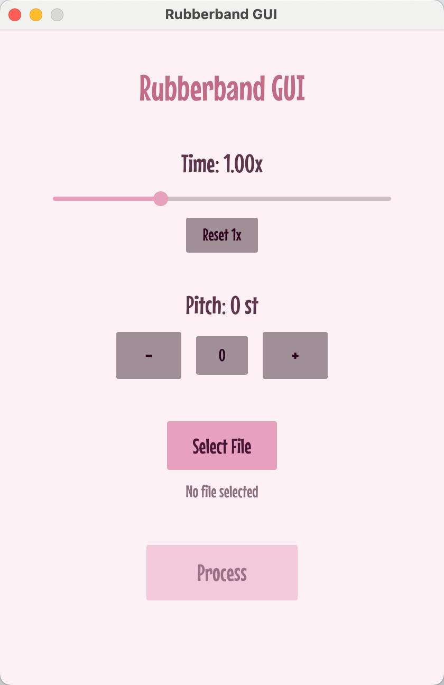

Rubberband GUI
Rubberband 是一个音频伸缩软件，可以不改变音调伸缩音频/不改变时长升降key。
但是其只有CLI，其GUI是收费的而且功能过多，非专业人士用起来有一定门槛。
最常用的功能就是加速/减速，以及升降key；范围都在一个八度之内。决定自己做一个GUI实现。
为了避免依赖（比如Python runtime），选用了Rust iced框架；但是对于Rust的GUI框架，LLM没有太多训练语料。
实测下来，一个好方法是直接把框架的代码pull下来，提需求之后让LLM自己探索框架的源码和API，并进行plan。
个人认为可能的原因是，LLM的latent空间里面应该是有对gui组件足够好的抽象的（可能是得益于react/vue/qt的大量训练数据），以至于只要去框架的源码里面把这些抽象对应的代码找出来，就可以写出来了，所以可以直接让他搜框架的源码。
因为懒得bindgen了，集成rubberband的方式就是直接把binary用include_bytes!整个塞进去，要用的时候再写到temp file里面执行。
实现效果如下。
